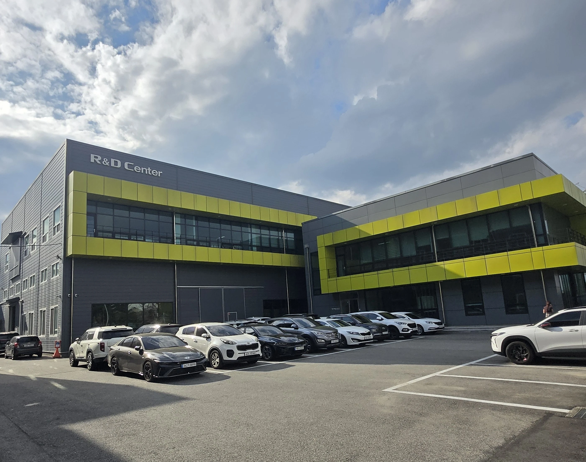
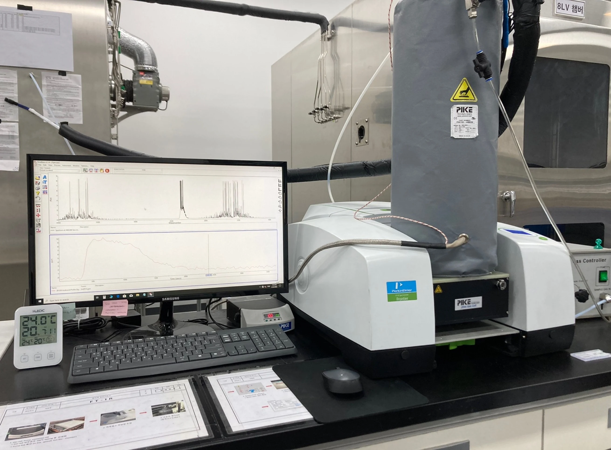
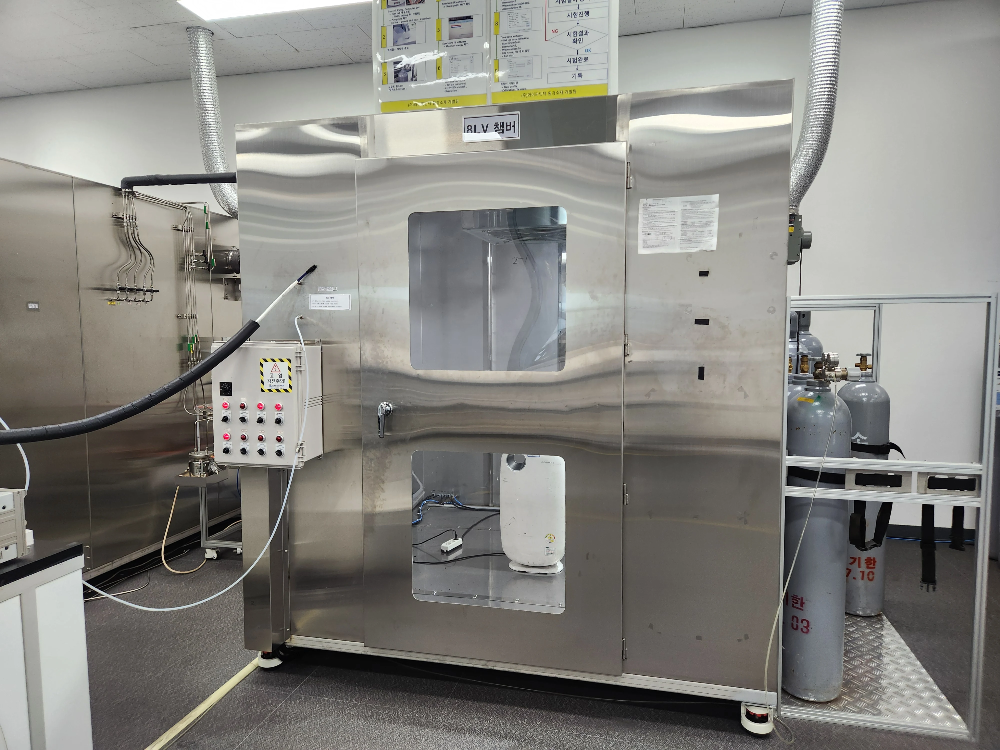
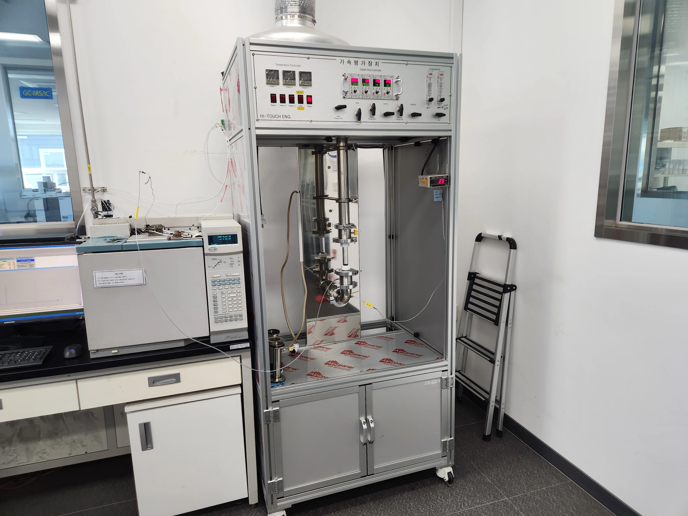
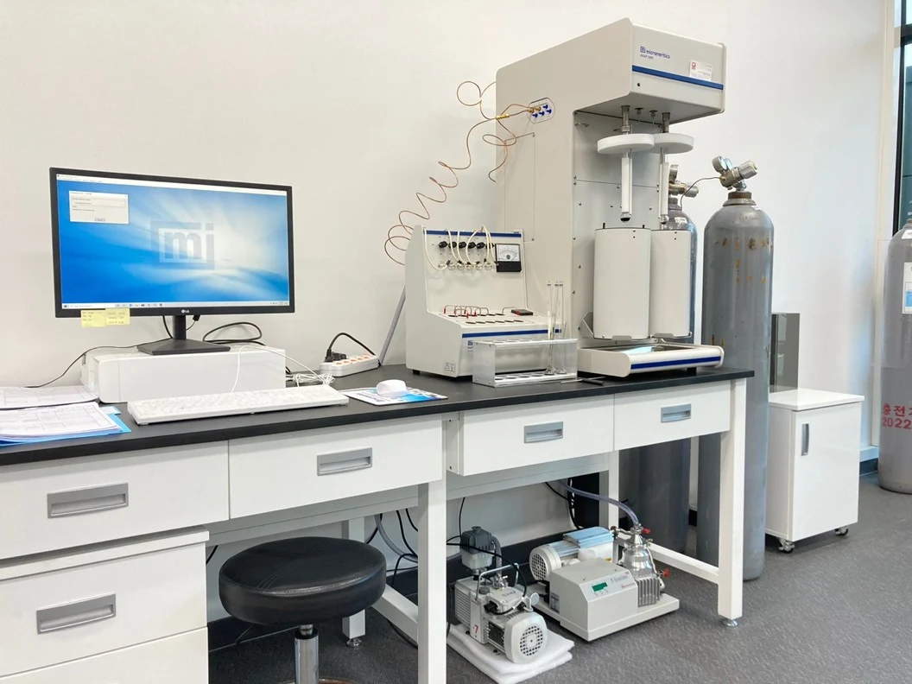
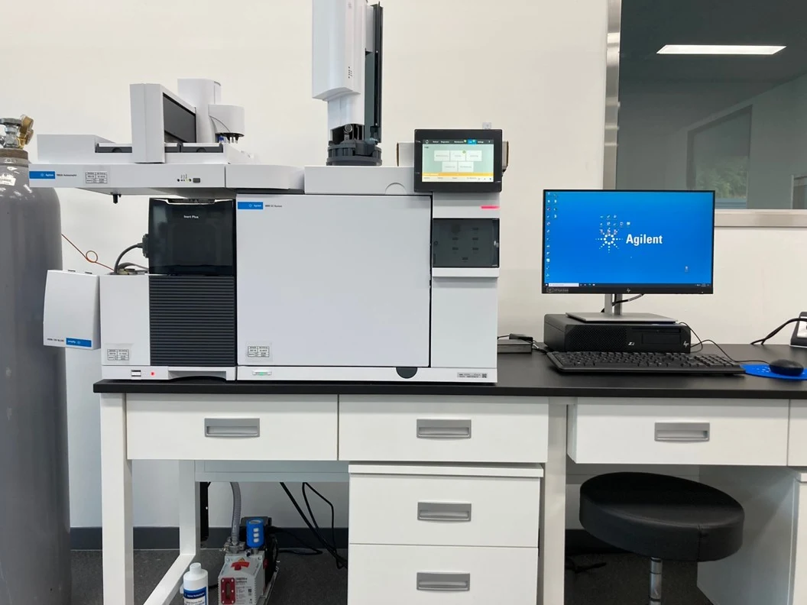
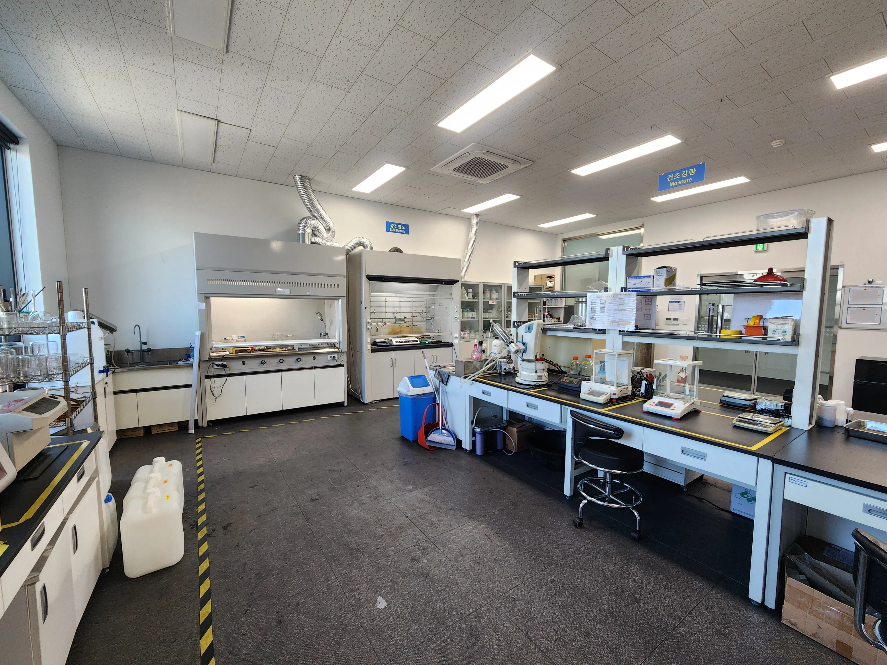

01RESEARCH & SCALE-UP
기술연구소
흡착소재 · 필터 · 재생기술 연구를 전담하는 연구개발 조직을 운영합니다.

01흡착소재 · 필터 · 재생기술 연구를 전담하는 연구개발 조직을 운영합니다.

02다양한 분석기기와 시험설비를 기반으로 기술의 성능을 검증합니다.

03실험실 성과를 실제 제조공정으로 연결하는 스케일업 검증을 수행합니다.

04활성탄의 흡착성능을 표준시험법에 따라 정밀하게 측정하고, 실제 운전환경을 반영한 가속평가시험으로 장기 성능을 검증합니다.

05BET 비표면적과 미세 세공구조를 분석하여 활성탄의 흡착 특성을 데이터로 평가합니다.

06기체크로마토그래피-질량분석기(GC-MS)로 탈취·흡착 대상 유해가스와 휘발성 유기화합물(VOCs)을 정성·정량 분석합니다.

07입도 · 회분 · 수분 · 경도 등 출하 전 주요 품질항목을 종합적으로 확인합니다.
제거 대상물질과 사용환경을 분석해 최적의 활성탄 원료·기공구조를 선정합니다.
미세기공·중기공·대기공의 분포와 입도를 조절해 흡착성능을 최적화합니다.
특정 물질에 대한 선택적 흡착을 위해 첨착·표면개질 처리를 적용합니다.
요오드가, BET 비표면적, CTC 등 시험을 통해 흡착성능을 검증·최적화합니다.
풍량, 압력손실, 수명을 고려해 필터의 구조와 충진량을 설계합니다.
입고부터 출하까지 단계별 검사와 LOT 관리로 균일한 품질을 보장합니다.
회사 제공 자료에 기재된 번호와 명칭입니다. 출원·등록 상태를 구분한 법적 권리 현황은 별도 확인 대상입니다.
사용 환경과 요구 성능을 함께 검토하여 적합한 제품과 공정을 제안합니다.